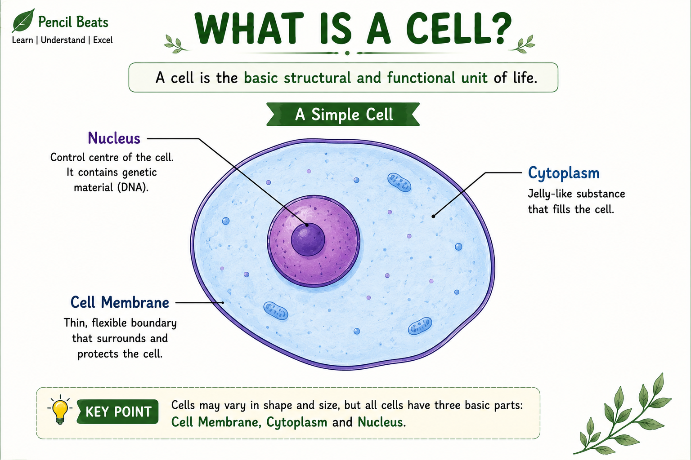

🧫 Cell
The cell is the smallest structural and functional unit of life.
Introduction
A cell is the basic structural and functional unit of all living organisms. Every living organism, whether it is a tiny bacterium or a giant tree, is made up of one or more cells. Cells perform all the essential life processes such as nutrition, respiration, growth, reproduction and excretion.
Cells are often called the "building blocks of life" because they combine to form tissues, tissues form organs, organs form organ systems and organ systems together form an organism.
The size and shape of cells vary depending on the function they perform. Some cells are spherical, some are elongated, some are rectangular while others have irregular shapes. Despite these differences, all cells carry out the basic activities necessary for life.
Some organisms consist of only one cell and are known as unicellular organisms, whereas organisms made up of many cells are called multicellular organisms. Amoeba, Paramecium and Bacteria are examples of unicellular organisms, while humans, animals and plants are multicellular.
Characteristics of Cells
- Cells are the smallest living units.
- They perform all life processes.
- Every new cell arises from an existing cell.
- Cells contain hereditary material.
- Cells vary in size, shape and function.
Basic Parts of a Cell
Although cells differ in structure, most cells contain three main parts.
- Plasma Membrane – Protects the cell and controls the movement of substances.
- Cytoplasm – Jelly-like substance where cell organelles are present.
- Nucleus – Controls all activities of the cell and contains genetic material.
📌 Key Points
- The cell is the basic structural and functional unit of life.
- All living organisms are made up of one or more cells.
- Cells differ in size, shape and function.
- Every cell contains cytoplasm enclosed by a plasma membrane.
- The nucleus controls most activities of the cell.
📝 Remember
Cells are called the "Building Blocks of Life" because every living organism is made up of cells.
🎯 JKBOSE Exam Point
Frequently asked examination questions include:
- Define a cell.
- Why is the cell called the basic unit of life?
- Differentiate between unicellular and multicellular organisms.
- Name the three basic parts of a cell.

Figure 1.3 — Basic structure of a typical cell.
❓ Practice Questions
- What is a cell?
- Why is the cell called the structural and functional unit of life?
- Differentiate between unicellular and multicellular organisms with examples.
- Name the three basic parts of a cell.
- Why do cells differ in shape and size?